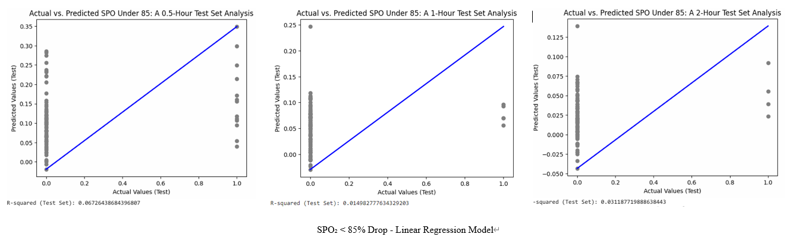
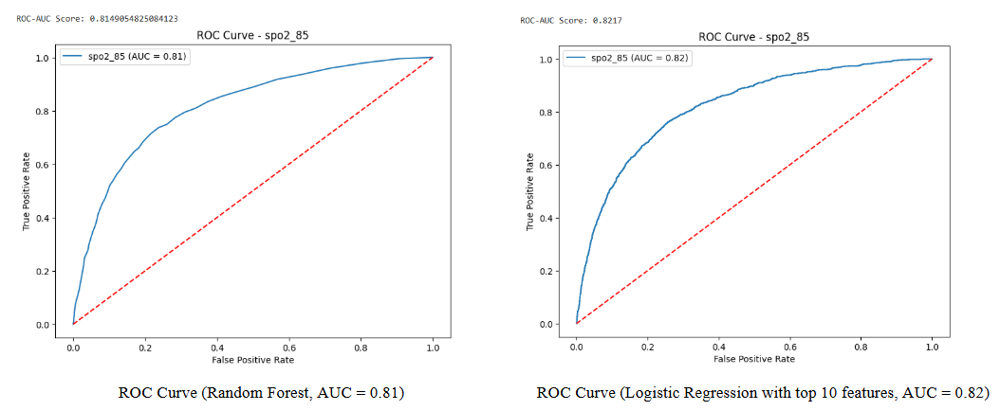
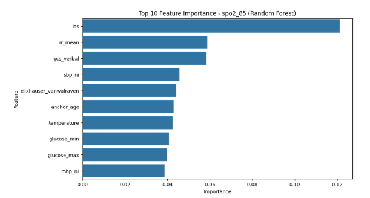

Predicting Postoperative Hypoxemia: A Machine Learning Approach
Project Overview
• Role: Data Analyst• Date: Aug. 2024 - Dec. 2024
• Skills: Machine learning implementation and model evaluation.
• Aim: To develop a machine learning model that predicts the likelihood of postoperative hypoxemia using patient background data, enhancing risk assessment and improving patient care outcomes
Key Contribution
Optimizing Predictive Accuracy
• Identified Issue: The original dataset from the clinic contained only 500 records, which was insufficient for effective machine learning. Additionally, the linear regression results showed low correlation, limiting predictive capability.
• Adjustment Made: Collected 5,000 additional data points and applied Random Forest.
• Purpose of Adjustment: To improve variable correlations and enhance the predictive accuracy of the machine learning model.


Results and Impact
The Random Forest model identified the top 10 most important features affecting patients suffering from hypoxemia. As shown in the feature importance plot, "los" (length of stay), "rr_mean" (mean respiratory rate), and "gcs_verbal" (Glasgow Coma Scale verbal response) emerged as the most critical predictors. Other significant features include blood pressure, glucose levels, age, and temperature, highlighting a combination of physiological and demographic factors influencing the condition.